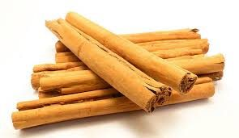

True Ceylon cinnamon
Pure Ceylon cinnamon (Cinnamomum verum) is the cornerstone of our business. It has a refined, sweet flavour and far less coumarin than common Cassia, which makes it the choice for gourmet kitchens and health-conscious consumers.
Founded in 1990, Cinnova Trading (Pvt) Ltd has grown into one of Sri Lanka's premier spice export houses, sharing the aroma, heritage and quality of Ceylon spices with global markets.

Pure Ceylon cinnamon (Cinnamomum verum) is the cornerstone of our business. It has a refined, sweet flavour and far less coumarin than common Cassia, which makes it the choice for gourmet kitchens and health-conscious consumers.